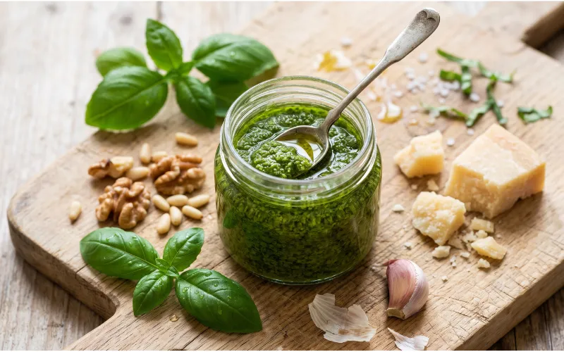
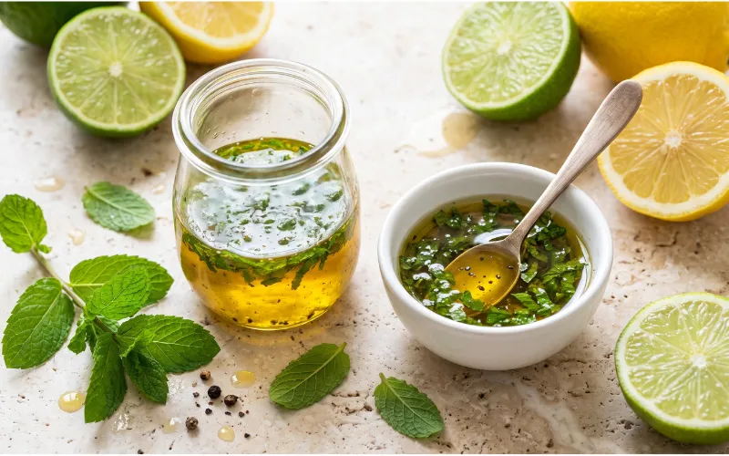
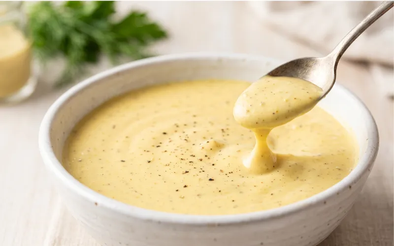
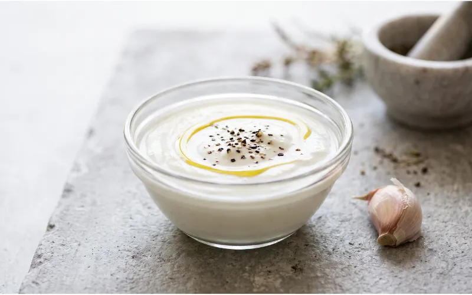
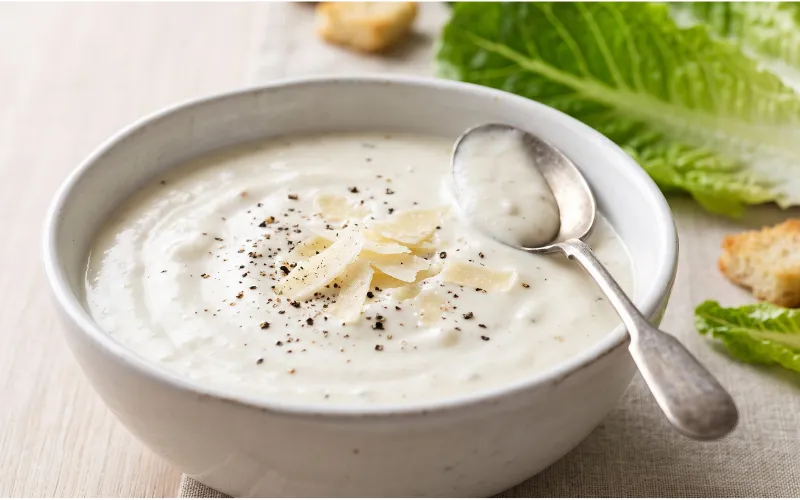
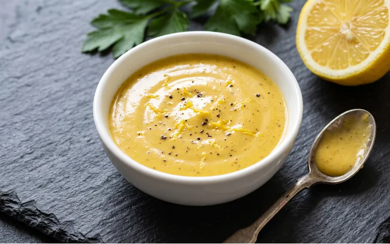
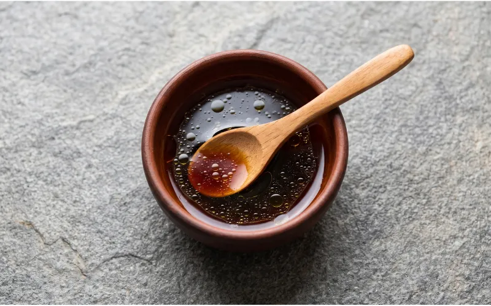
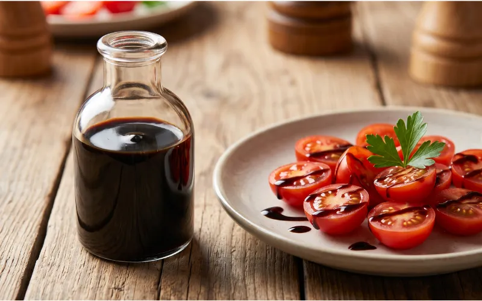
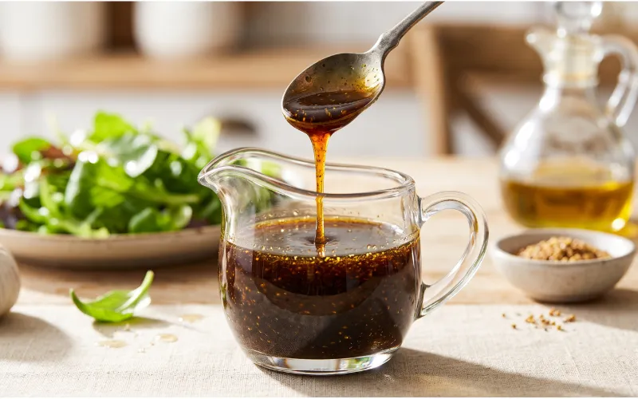

Salsa Pesto
Albahaca fresca, nueces, parmesano y aceite de oliva

Salsa Árabe
Doble toque de limón, menta picada y lemon pepper

Salsa de Yogur con Mostaza
Emulsión cremosa con yogur natural y mostaza amarilla

Salsa de Yogur
Ligera y versátil con ajo machacado y aceite de oliva

Salsa Caesar con Mayonesa Casera
Clásica y aterciopelada con doble textura de parmesano

Salsa de Mostaza
Con cuerpo, pimienta recién molida y limón siciliano

Salsa Shoyu Light
Toque oriental ligero con salsa de soja y vinagre blanco

Salsa de Vinagre Balsámico
Reducción brillante en 2 minutos con azúcar demerara

Salsa de Vinagre Balsámico Endulzado
Vinagreta agridulce en frío con miel y mostaza